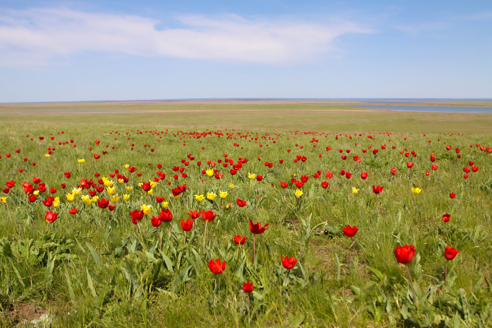
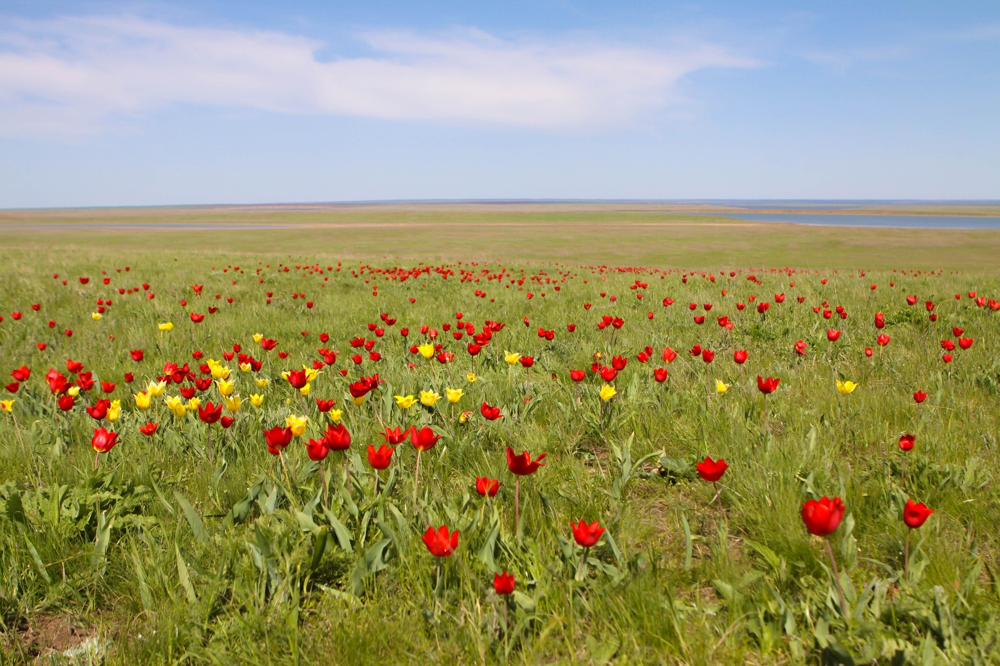

Станица Вёшенская
Михаил Александрович Шолохов жил в станице Вёшенской с 1926 по 1984 годы. Ежегодно в мае в Вёшенской проходит Всероссийский литературно-фольклорный праздник «Шолоховская весна», посвященный дню рождения писателя, на который собираются тысячи поклонников его творчества.
Станица расположена на левом берегу реки Дон. В настоящее время она является административным центром Шолоховского района Ростовской области и Вёшенского поселения. Здесь находится центр Государственного музея-заповедника М.А. Шолохова и ряд его объектов.